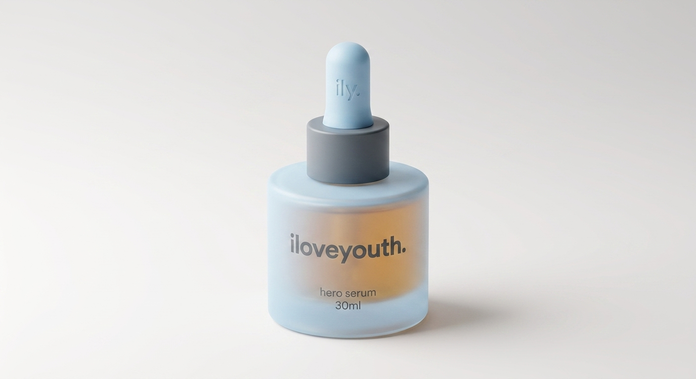
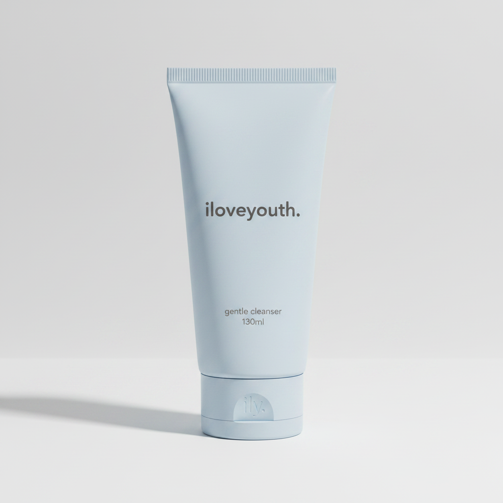
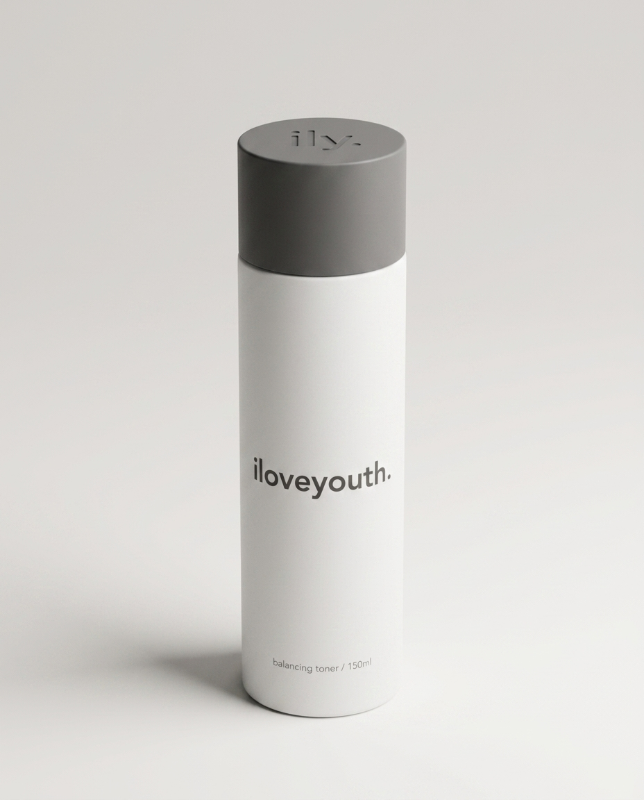
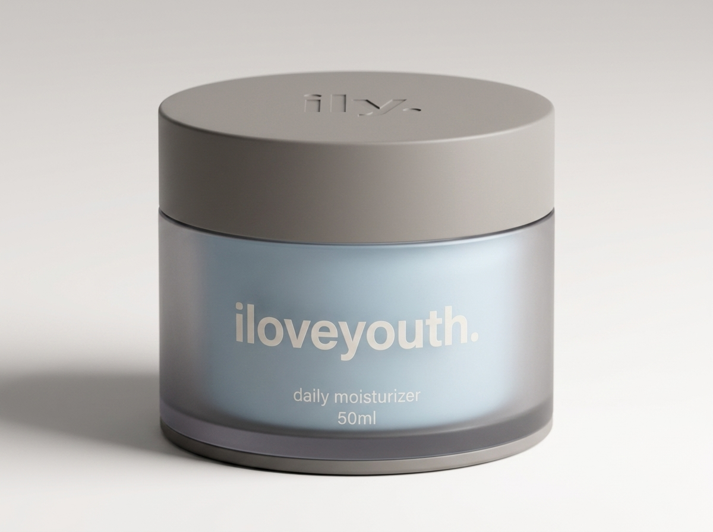

packaging audit · 2026-05-01
standards audit, prestige tier.
a senior-designer-eye review of the iloveyouth packaging system against prestige-skincare convention. the principles ily doesn't yet know it doesn't know — plus resolved positions on the five live thomas-vs-zach disagreements.
section 01.
the field guide — principles a non-designer founder is most likely missing.
information hierarchy on a beauty SKU
prestige skincare uses a 5-tier hierarchy on the front face. mass uses 3, sometimes 4 — the tells are missing tiers and wrong sizing within them.
the mass tell is two heroes — brand at 32pt at the top and product name at 28pt in the middle. prestige picks one hero per face. drunk elephant breaks this on purpose (it's part of their loud-prestige stunt) but they get away with it because every other element is dialed. don't copy the exception without copying the discipline.
type sizing and the shelf-distance test
a real prestige designer sets type to three test distances:
the rule of thumb: on a 30ml dropper face (roughly 25mm wide × 70mm tall), the hero type caps at ~16pt in a humanist sans like satoshi. above 22pt, the SKU starts looking like a topicals or a bubble — fine for accessible-premium, wrong for sephora premium.
color in prestige vs. accessible-premium
the single biggest visual difference between glow recipe and tatcha is chromatic count per SKU. glow recipe runs 4–6 colors visible on a single front face. tatcha runs 1–2.
prestige plays one of three color strategies:
- chromatic monogamy — one tone, used everywhere on the SKU, sometimes with one ink-dark accent (tatcha cream/gold, aesop amber/black, la mer navy/silver). the SKU reads as one volume, not a composition.
- achromatic + one signal color — neutral body plus one chromatic moment that codes function or hero status (augustinus bader's blue cap, le labo's hand-stamped black on cream label). the signal color is intentionally rare — it's how the eye finds the line on the shelf.
- function code (rare in prestige, common in accessible-premium) — multiple body colors mapped to product function. the risk: it tilts toward glow recipe / bubble / byoma unless the colors are deliberately muted and the type system stays disciplined.
finish semiotics
finishes are read pre-cognitively. consumer perception research is consistent on what each signals:
| finish | signal | tier read | risk |
|---|---|---|---|
| gloss / varnish | energy, accessibility, value | "fun" at accessible-premium · "cheap" at prestige | shifted away from in prestige since ~2018 |
| matte | control, restraint, intention | dominant prestige finish 2018–2026 | fingerprints, transit scuffs, dies under flat light |
| frosted (on glass) | clinical-but-soft, european-pharmacy | default for serums and droppers in premium | none significant |
| soft-touch | luxury tactility | highest perception per cost dollar | degrades with skin oils, yellows on white over time |
| spot gloss on matte | sophistication | works for small marks, fails for benefit claims | amateur if used to highlight a claim |
| foil | old-luxury | estée lauder, lancôme territory | slips heritage unless one small mark |
negative space as a price signal
the strongest correlation between perceived price tier and a single layout variable is percentage of unused face area. empirical norm in beauty packaging audits:
the shelf-blocking principle
a prestige line at 6ft reads as one family. individual SKUs are visually quiet, so the family identity has to come from somewhere — and prestige uses the silhouette + one constant technique:
- aesop — amber glass is the constant. every SKU. type and label vary; the bottle color doesn't.
- le labo — white label with hand-stamped type. the white rectangle is the constant.
- laneige — slate-blue. the exact tone is the constant; everything else varies.
- augustinus bader — the blue cap. bodies and labels change; the cap doesn't.
ily's locked constants are: shadow grey collar on every dropper, shadow grey dust cover on every pump, ily. cap emboss on every cap, and the frosted blue body on the hydration tier. of those, the shadow grey collar/dust cover is the single highest-leverage cohesion lever — it's cheap ($0.10/unit), unmistakable in catalog photography, and works across every dropper/pump SKU regardless of body color. lean into it.
the cap emboss is doing real work but it's quiet work — at shelf distance it disappears. it's a touch signature, not a sight signature. that's fine, but don't expect it to do the shelf-blocking job. the collar is doing that.
photography survival
things that read fine in CAD and die on the photographer's table:
- subtle deboss without raking light. a 0.3mm deboss on a matte surface is invisible without specific lighting. ily's
ily.cap emboss falls in this risk zone — fine in person, dependent on lighting in catalog. mitigation: brief the photographer to use a hard side light for cap detail shots, and accept that flat-lay catalog photography won't always show it. - 5%-tone screens / near-white-on-white. disappears in any white-balance correction.
- frosted blue at
#ADE8F9is light enough to suffer this fate — see § 3.2. - uninked deboss brand marks read in person and disappear on camera. le labo's hand-stamped label survives photography because the stamp is inked. ily's
ily.emboss is uninked — it will rely on raking light. - matte finishes flatten in flat-lay. they need angle, shadow, or texture in the scene. tatcha's catalog uses fabric and stone underlays partly for this reason.
what survives: inked silkscreen, contrast against the body color, dimensional differences (height, depth, body shape). these are what catalog photography rewards.
regulatory + INCI realities
EU and US regulations require: INCI list legible to the consumer (~1.5mm cap height working floor) · net content on the front · period-after-opening symbol · batch / lot code · country of origin · responsible-person address (EU) · warning language for actives.
prestige hides these without breaking law via:
- INCI on the back in a tight tracked-out lowercase block. no boxes. ily's plan (satoshi regular 400 lowercase on back) is correct.
- POA symbol embossed into the base of the jar/bottle, not printed. tatcha does this.
- batch code laser-etched into the base after fill — not printed. ily's quote doesn't include this; flag for the supplier ($0.02–0.04/unit, often free at 10K).
- warning language wrapped into the back-panel block, not boxed. the all-caps exception in ily's brand identity ("SHAKE WELL," "LOT XXXX") fits this convention exactly.
sustainability cues that don't read as greenwashing
what works: material honesty (glass that looks like glass) · weight (heavier feels more recyclable to consumers) · refillable mechanics (bader's refillable jar). what reads performative: leaf icons, "eco" badges, kraft-paper aesthetics, "made with X% recycled" front-face callouts. premium consumers (maya, sam) read these as glow recipe / bubble signals — wrong tier.
ily's brand voice ("never empty superlatives," "let the material itself speak rather than badging it") aligns with prestige convention. when PCR is adopted, mention it on the back panel only, no front badges, no leaf icons.
cross-format cohesion
a 30ml dropper and a 200ml tube must read as siblings despite an 8× difference in canvas. prestige uses three levers, in order of importance:
- one typographic grid — same x-height ratio, baseline rhythm, scaled per face. ily's rule 6 names this. highest leverage, zero unit cost.
- one universal constant element — aesop's amber, le labo's white label, ily's shadow grey collar/dust cover.
- finish family — matte/frosted across the line. cost: $0.05–0.25/unit depending on substrate.
section 02.
the category map — where ily sits, and what's adjacent.
why this zone is the only defensible position
the sephora premium shelf demands restraint (above 22pt-statement type drifts to drunk elephant/topicals territory). the ingredient-forward voice demands clarity (lowercase grammar, ingredient-as-hero — bader's territory). the founder aesthetic demands modern, not heritage (rules out la mer/sulwhasoo's gilt-and-crests positioning).
directional risks if ily drifts
- up (la mer · sulwhasoo) — heritage cues that ily's voice rejects. would have to abandon lowercase grammar and ingredient-led typography.
- down (glossier · rhode) — accessible-premium pricing tier ($25–$45). ily's COGS and positioning rule it out.
- left (aesop · vintner's daughter) — abandon the function-color system entirely (one color, one type, one silhouette across the whole line). coherent move but a different brand.
- right (drunk elephant · naturium) — more chromatic density, more decoration. crosses the "trying too hard" line for the founder voice.
closest neighbors in order: augustinus bader (sharpest comparable) → dr. sturm → tatcha.
section 03.
resolving thomas vs. zach — five live decisions, decided on principle.
3.1 — type size on the front face
thomas: restrained · zach: statement.
premium-tier convention is hero type sized to read at 3ft, not 6ft. 14–22pt on a 30ml SKU, never above. above 22pt the line drifts into accessible-premium / drunk elephant territory. the sephora shelf-distance test demands legibility at ~3ft (typical browse distance from the wall) and silence at 6ft — that's glow recipe's job, not ily's.
ingredient-led typography requires restraint. the whole bet of the "named." campaign is that the ingredient earns hero status by being the one big thing on the face. setting it large is consistent with the bet; setting it too large flips it into a topicals-style benefit shout, which kills the prestige read.
decision: ingredient hero at 14–22pt indexed to face width (~16pt on a 30ml dropper, scaling proportionally); never above 22pt; product type at 25–35% of hero size; eyebrow (where used) at 6–8pt with wide tracking.
3.2 — color saturation in the function code
thomas: muted · zach: saturated.
three premium-tier function-color substrategies: saturated · muted-tint · pastel. frosted blue at #ADE8F9 is a pale tint — closer to pastel than to muted-saturated. side-by-side with augustinus bader's cap blue (much deeper) or dr. sturm's clinical signal-blue, ily's blue reads softer and risks tipping accessible-premium. it also has a real photography problem: at #ADE8F9 it's only marginally darker than ghost white, so on a white catalog sweep with a subtle white balance shift, the body color can wash toward white.
path A (zach-leaning): introduce a deeper packaging-only frosted blue. keeps the digital #ADE8F9 for web/screen contexts but uses a saturated sibling on physical surfaces. path B (thomas-leaning): keep #ADE8F9 and do the cohesion work elsewhere — heavier reliance on shadow grey constants.
path A is the safer, more category-aligned move. path B is internally consistent but pushes the line toward bubble's neighborhood under fluorescent retail light.
decision: introduce a packaging-only frosted blue in the#5FB0DC–#7DC8E8range (test physical samples at 5K pilot). keep#ADE8F9as the digital token. add--ily-frosted-blue-physicalto tokens.css once the sample lands. brand-identity.md screen value stays unchanged.
3.3 — decoration density
thomas: 1-color front + back · zach: add a 2nd color or accent.
premium-tier baseline is 1 ink, occasionally 2 when the second codes a specific tier. tatcha runs 1–2 inks per face. bader runs 1 (silver foil mark only). aesop runs 1. drunk elephant runs 3+ (the stunt). la mer runs 2 (silver + dark blue).
a second color earns its place when: it codes an additional functional layer (active eyebrow on actives only — sturm) · it's a single fixed brand element used identically across the line (bader's silver foil dot) · it's a campaign-mark that disappears on standard runs.
a second color reads as trying when: it highlights a benefit claim · it varies by SKU · it's added because the design feels "too quiet" (the genuine sin).
decision: hold the 1-color front + 1-color back spec. reject decoration additions until a second-color reservation has a specific functional role. the one defensible second-ink moment: a small frosted blue accent dot or hairline rule on actives-tier SKUs only (the airless line) — coding "active" within the system.
3.4 — the period anchor
keep, drop, or amplify?
honest read: the period dot anchored on the bottom-right of every front face is doing real work, but only because the brand-identity period system is already established as a typographic signature. if ily were just adding a decorative dot to the corner of every label, it would read as a self-conscious flourish.
what makes it work: the wordmark ends in a period · the brandmark ends in a period · display headlines end in periods · ingredient lists end in periods. the period-as-signature is everywhere in the system. the packaging dot is a consistent extension, not an invented motif.
decision: keep. sized as a true period (~1.5mm at 30ml, scaling proportionally). front face only. bottom-right corner, fixed offset from edges. never on backs, never on caps (the cap emboss is doing that job). audit dieline reviews specifically for sizing drift.
3.5 — cap emboss universally vs. selectively
the prestige move is universal cohesion when the constant carries real meaning. aesop puts amber on every SKU because it carries the entire identity. bader puts the blue cap on every SKU for the same reason. selectivity reads as inconsistency — "we couldn't decide" — unless the selection is itself a tiered code.
the principle that resolves: a system that distrusts its other elements adds emphasis everywhere; a system that trusts its other elements lets each element do one job. universal cap emboss is the prestige move because the rest of the system is doing its job. selective embossing would read as the brand hedging.
decision: universal ily. emboss on every cap diameter. tooling cost is one-time per diameter. brief the production photographer that cap shots require raking side light. accept that flat-lay catalog photography will not always show the emboss — and that's fine, it's the touch signature.
section 04.
the amateur-tells checklist — 22 specific failure modes.
use this against any ily SKU dieline — and against any contractor's work — before signing off.
typography
- front-face hero type set above 22pt on a 30ml SKU. mass-tier sizing. caps the perceived price tier.
- two competing heroes on one face (brand at top + product name center, both large). the most common indie-skincare hierarchy mistake.
- body type set in a different typeface from headline type. mixing typefaces on a prestige SKU is a tell. ily uses satoshi everywhere — hold the line.
- type tracked tight on a small face. below 50ml, prestige type is tracked open (+25 to +75 letterspacing).
- capital-letter body copy outside the locked exceptions. ily's all-caps carve-out is system error states / packaging conventions / legal. anywhere else, lowercase.
- italics used for emphasis. almost never appears in prestige skincare. use weight (regular → medium) for emphasis.
color
- default pantone color choice (e.g., 286 C, 485 C, 354 C). signals "designer reached for the swatch book." prestige uses custom-mixed or supplier-verified spot tones.
- more than 2 colors visible on the front face. body color + ink = 2. adding a third usually pushes accessible-premium.
- saturation gradient between body and accent. a pastel body with a saturated logotype reads cheap. match saturation levels.
- almond silk used at equal weight with frosted blue anywhere. ily's brand identity has a 10:1 rule. violating it is the most predictable accessible-premium drift.
hierarchy & layout
- front face below 60% empty. below the prestige-tier negative-space norm.
- volume (ml/oz) sized larger than 8pt on a 30ml SKU. volume is a regulatory necessity, not a hero. 5–8pt in a corner.
- eyebrow text above 10pt or set in regular weight. eyebrows are tracked-out small caps or tracked lowercase — never paragraph-weight type.
- the legal/INCI block boxed or ruled. prestige sets it as a tight unboxed block. borders around regulatory copy is a mass tell.
finish & material
- matte body + gloss cap (or vice versa). the classic finish-mismatch tell. match finishes across components, or contrast them deliberately as a system rule (ily does the latter via shadow grey collars — that's intentional).
- soft-touch on a substrate that will yellow. soft-touch over a white plastic that ages to ivory in 6 months.
- varnish or gloss on the body anywhere on this line. off-brand for ily. catch it at supplier-spec stage.
production craft
- brand mark or hero type set right against the bleed edge. 2mm minimum margin from any edge is the prestige floor.
- print/photography-only fonts (live fonts not outlined in production AI files). quote 260422 explicitly requires outlined fonts. immediate amateur tell.
- subtle deboss with no specified raking-light brief for catalog photography. an emboss that only the in-person customer sees. either accept this (correct prestige move, document in style guide) or add a raking-light note to the photographer brief.
system cohesion
- one SKU breaks the typographic grid. most common in launch SKUs designed before the grid is locked.
- a "decorating" addition (extra mark, ornamental rule, illustrative element) that exists because the SKU "felt empty" in design review. additive moves compound; subtractive moves rarely fail. when in doubt, remove.
section 05.
apply back to system.md.
the six cohesion rules
| # | rule | verdict | notes |
|---|---|---|---|
| 1 | vessel color = function code | defensible | function-color systems exist in prestige (sturm, bader, la roche-posay) but they're rarer than chromatic-monogamy or achromatic-plus-one. internally consistent. not a tell — but the hardest of three strategies to execute. risk: frosted blue at #ADE8F9 specifically (see § 3.2). alternative: consider whether the 4-color system could be reduced to 2 (shadow grey + frosted blue body, almond silk reserved as a single annual gift drop). holding 4 is fine if committed to discipline. |
| 2 | one label spec across every vessel | correct | restraint is the prestige norm. 1-color silkscreen front + 1-color silkscreen back is exactly what aesop, le labo, and bader do. hold this. "no stickered labels" is right discipline — stickered labels are an immediate tell at premium. |
| 3 | cap emboss = ily. brandmark |
correct | universal cohesion via a single constant element is the prestige convention. one-time tooling cost is the right place to spend. caveat: brief the photographer for raking side light on cap shots — the uninked emboss will not survive flat-lay photography. document in photo-direction brief. |
| 4 | front type = ingredient, not product name | correct | ingredient-forward typography is the hero of the brand voice and consistent with the "named." campaign. caveat: type sizing must hold at 14–22pt indexed to face width. above that ceiling, the principle inverts and the SKU drifts into topicals-style benefit-shout territory. |
| 5 | the period as bottom-edge anchor | defensible | works because the period system is already established as a typographic signature throughout the brand identity. without that foundation it would be a flourish. risk: sizing drift. audit specifically for the period staying ~1.5mm on a 30ml face; allow proportional scale-up. risk: front-face only — never on backs (designer-precious). |
| 6 | one typographic grid | correct | highest-leverage cohesion lever and zero unit cost. make grid discipline non-negotiable for every dieline review. caveat: the rule states the principle but doesn't yet define the grid. add a grid spec sheet (x-height ratio, baseline grid, vertical rhythm units, type-to-face-width tables) before the first dieline goes to production. without that document, the rule is a value, not a system. |
per-format application — current ily mockups in context
these are the existing ily mockups, audited against the per-format spec.





prioritized action list.
top 5 changes before the first SKU goes to dieline.
ordered by impact-per-effort.
- define the typographic grid as a spec sheet (x-height ratios, baseline grid, type sizes per face area, hero/eyebrow/product-type proportional rules). rule 6 names the principle but no grid document exists. highest impact, zero cost — without this, every dieline review is subjective.
- test a deeper packaging-only frosted blue in the
#5FB0DC–#7DC8E8range as a 5K pilot on the hero serum (PL184-LI-30-94). compare side-by-side with#ADE8F9under retail fluorescent light. decide whether to introduce a packaging-specific token. high impact, $500 setup + 5K production pilot cost. - spec the period anchor sizing rule (1.5mm at 30ml face, proportional scaling). add to system.md as part of rule 5. audit checkbox in dieline reviews. medium impact, zero cost.
- spec a fallback hierarchy for long ingredient names on the dropper face (line-break rule, abbreviation rule, or two-line typesetting). the vertical-centered hero only works for ingredient names up to ~14 characters at 16pt. medium impact, zero cost.
- brief the catalog photographer with a raking-light requirement for cap-detail shots. document this in the photo-direction file before the first SKU shoots. low cost, prevents an avoidable photography failure.
follow-up notes for next iteration
- once the deeper packaging frosted blue is locked, update tokens.css with
--ily-frosted-blue-physicaland document the digital-vs-physical pair in brand-identity.md. - add a grid spec document at
packaging/grid.mdreferenced from system.md rule 6. - after the first dropper SKU ships and is photographed, re-audit § 1 (photography survival) and § 4 (production craft) against the actual catalog images.
addendum a · 2026-05-02.
reference set, visualized — what each comparable does and what ily can borrow.
the audit names augustinus bader, tatcha, le labo, and sulwhasoo as the closest comparables. this addendum makes the principles concrete by showing how each one resolves the four big system decisions (wordmark placement, brandmark presence, deboss/foil strategy, ink-on-body ratio) — and which v4 vibe each one maps to.
| brand | wordmark | brandmark / deboss | foil / metallic | ink-on-body | maps to ily vibe |
|---|---|---|---|---|---|
| augustinus bader "the cream" |
tiny lowercase, anchored bottom-right of the front face. ~25–30% the size of the product-type hero. never competes with the ingredient/product type | none on body. brandmark only on cap (debossed) | single small silver-foil dot per SKU — the brand signature mark. one mark of one element | full-contrast Shadow Grey on white body; Ghost White on dark. no tone-on-tone | vibes 01 + 05 (anchored wordmark + single foil signature) |
| tatcha "the dewy skin cream" |
centered at the base of the front face, beneath a hairline rule. modest size, structural placement | none on body. brandmark on cap embossed (often a tatcha gold seal) | gold foil seal on cap; never on body type | full-contrast restrained Shadow Grey or warm-near-black on cream/ivory bodies | vibe 02 (tatcha-anchored — wordmark with hairline rule) |
| le labo santal 33, fragrance line |
typed-in lowercase as the dominant element, but on a stark white label rectangle. the white rectangle does the prestige work — wordmark is content | hand-stamped lot/date deboss on each label — every bottle is "individually numbered." the deboss is the craft signal | none. discipline is "no metallic, ever" | full-contrast black ink on white label. no tonal play | vibe 03 (deboss-forward — le labo's hand-stamped craft applied to glass body itself) |
| sulwhasoo first care activating serum |
small chinese-character mark + roman wordmark, centered, in matched amber-on-amber tones | none on body. brandmark on cap printed (a calligraphic chinese mark) | copper-foil mark on the most expensive SKUs only — tier-coded, not universal | tone-on-tone — amber body with deeper-amber ink, type ghosts at distance and resolves up close. the editorial-sophistication play | vibe 04 (tone-on-tone — sulwhasoo's amber-on-amber editorial sophistication) |
what ily borrows from whom
- from bader: the wordmark-anchored-small discipline (vibes 01 & 05) — and the single-foil-signature philosophy (vibe 05). bader is the sharpest single comparable on the category map.
- from tatcha: the hairline-rule treatment (vibe 02) and the principle of structural restraint over ornament. tatcha proves a "decorating" device can work if it codes structure, not flourish.
- from le labo: the deboss-as-signature philosophy (vibe 03). le labo's hand-stamping costs labor per bottle; ily's blow-mold/injection deboss costs once per diameter and runs free forever.
- from sulwhasoo: the tone-on-tone editorial register (vibe 04). sulwhasoo proves it's prestige-viable, but at the cost of legibility ceiling — the lane requires brand commitment to "step closer."
- not borrowed: drunk elephant's loud-prestige stunt (wrong tier register), glow recipe / bubble's pastel-multiplicity (wrong tier), la mer's heritage gilt (wrong era).
addendum b · 2026-05-02.
color twin — the digital-vs-physical packaging blue, picked rigorously not by eye.
§ 3.2 of the audit recommended a deeper packaging-only frosted blue. the v2 set used ~#6FB8DC, which was a reasonable but eyeballed shift. this addendum documents a more rigorous selection — and surfaces the industry pattern that justifies a packaging-tier color sibling in the first place.
is it normal to ship a different physical color than the digital brand color?
yes — this is the digital-vs-physical color twin pattern, and it exists because RGB and physical pigment follow different rules:
- digital colors are RGB — emitted light, ~98% sRGB gamut, screens are bright and contrast is high
- physical colors are CMYK + spray-coat pigment + substrate — reflected light, smaller gamut, and a coating on frosted glass loses ~15–25% chromatic intensity vs. screen
the result: take an RGB pastel like #ADE8F9, spray-coat it on glass, and the physical result is paler still. brands that care about color fidelity ship two specs:
| brand | digital | physical (pantone) | why they diverge |
|---|---|---|---|
| tiffany & co. | #0ABAB5 | PMS 1837 | different formulation per substrate (paper vs. box vs. ribbon) |
| hermès | orange digital varies | PMS 1505 / 1655 / 21-1463 TPX | three physical formulations — paper, leather, textile |
| augustinus bader | digital marketing blue | cap-blue Pantone (deeper) | cap survives retail lighting where the digital pastel would wash |
| glossier | #FCE5DD | warmer, deeper pink | survives bag-and-box catalog photography |
| iloveyouth (proposed) | #ADE8F9 | PMS 305 C territory | same — physical sibling so the bottle doesn't wash on a white catalog sweep |
so the answer to "is this normal?" — yes, and it's particularly normal in beauty packaging where retail lighting and catalog photography are unforgiving. it's not departing from the brand — it's protecting the brand from the failure mode of a single hex applied to media it wasn't designed for.
how the deeper packaging blue was selected — LAB color space, not RGB
RGB shifts are perceptually uneven (a 20-point shift in the B channel reads completely different at low vs. high luminance). LAB color space gives perceptual control: hold hue (a* and b* channels) constant, reduce L* (lightness) by a measured amount.
standard pigment-loss compensation for spray coatings on opaque substrates is L* reduction of 15–25 points.
#ADE8F9 in LAB ≈ L* 88, a* -16, b* -14 (very light, slightly green-blue, slightly cool).
| candidate | L* | a* | b* | hex | swatch | pantone (closest) | read |
|---|---|---|---|---|---|---|---|
| digital lock | 88 | -16 | -14 | #ADE8F9 |
— | screen-only · pale tint | |
| light shift | 78 | -16 | -14 | ~#85C8E0 |
PMS 304 C | minimum shift · holds white catalog sweep | |
| medium shift ⭐ | 68 | -18 | -16 | ~#5FA9C8 |
PMS 305 C | recommended · bader-territory · same hue family · survives photography | |
| deep shift | 56 | -20 | -22 | ~#3F87B0 |
PMS 549 C | approaches sturm clinical-blue · crosses into "different color" territory |
why ~#5FA9C8 / PMS 305 C
- holds the same hue family as
#ADE8F9(a* shifts by only 2 units; b* by 2 units). a viewer sees them as siblings, not different colors. - L* drops by 20 — exactly in the standard pigment-compensation window for spray coatings.
- survives a white catalog sweep — the body color won't wash toward white under subtle white-balance correction.
- sits in bader-territory on the category map (audit § 2). that's the sharpest single comparable.
- specs to PMS 305 C, a real production-orderable color with a physical pantone chip UA Packaging color-matches against. removes the "which exact value did you mean" ambiguity from supplier handoff.
two pastels in a brand — concern resolved
the brand has two pastels: frosted blue + almond silk. the audit-flagged risk ("amateur tell #10 — almond silk used at equal weight with frosted blue") is already governed by an existing brand-identity rule:
10:1 ratio. if frosted blue appears 10 times on a page, almond silk appears once. almond silk is reserved for limited drops, gifting, and sets only.
that's the right governance. the two-pastel concern dissolves at the system level — almond silk is never at equal weight, so the failure mode never happens.
what's complementary vs. what's a sibling
worth being precise: #5FA9C8 is not a complementary color to #ADE8F9 — it's a chromatic sibling in the same hue family. (the actual color-theory complement of #ADE8F9 would be a warm peach/orange — which is, not coincidentally, exactly what almond silk #FFD5C6 already is. that pairing is intentional.) what we want for packaging is sibling-not-complement: a deeper version of the brand color that survives physical media, not a contrasting accent that introduces a new hue to the system.
action — once the pilot lands
- order a 5K production pilot at
~#5FA9C8/ PMS 305 C on the hero serum vessel and compare under retail fluorescent lighting against the existing#ADE8F9spec - if the pilot lands, add
--ily-frosted-blue-physical: #5FA9C8;to tokens.css alongside the existing--ily-frosted-blue: #ADE8F9; - document the digital-vs-physical pair in brand-identity with a one-paragraph rationale linking back to this addendum
- spec PMS 305 C in every UA Packaging artwork file, never the hex value